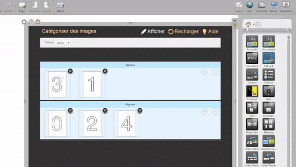

Esercizi interattivi di OpenBoard
Utilizzando queste interattività, puoi creare diversi tipi di esercizi personalizzati. Questi possono riguardare la categorizzazione, i calcoli, la memorizzazione e così via.
Le interattività si trovano nella Libreria di OpenBoard : clicca su  per trovarle.
per trovarle.
Esempio
Come esempio, creeremo un esercizio utilizzando l'interattività "Categorizza immagini" : 
 Provalo! Sposta questa finestra di dialogo da un lato e riproduci l'esempio sulla lavagna!
Provalo! Sposta questa finestra di dialogo da un lato e riproduci l'esempio sulla lavagna!
Prima, trascina e rilascia l'interattività sulla tua lavagna e clicca su "Modifica"
Quindi, cambia il nome delle categorie secondo le tue esigenze :
 Puoi aggiungere o eliminare categorie usando le icone + e -
Puoi aggiungere o eliminare categorie usando le icone + e -
Successivamente, aggiungi le immagini che desideri nella categoria corrispondente.

Infine, clicca su "Visualizza" per mostrare il risultato e svolgere l'esercizio.
 Puoi ripetere l'esercizio utilizzando l'icona "Ricarica".
Puoi ripetere l'esercizio utilizzando l'icona "Ricarica".